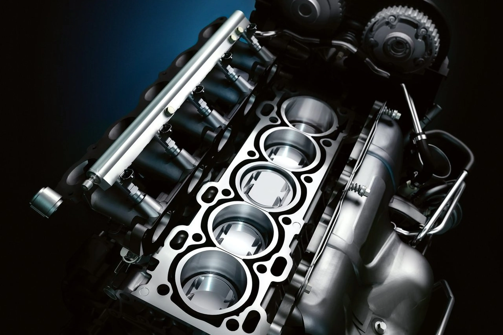

Debut del Ford Mustang
Debutó en 1964 como modelo 1964½ con un precio de US$2368 ($20 690 en 2024), cuyas ventas anuales estaban estimadas en alrededor de 100 000 unidades. Las ventas del primer año superaron las 400 000 unidades y fueron de un millón en dos años.
Diseño
Cambio radical del Ford Mustang
El cambio en el Ford Mustang II fue bastante radical si los comparamos con la anterior etapa (recordemos, de 1971 a 1973), pero no es tanto cambio si lo comparamos con los primeros modelos. Este diseño se adecúo a las tendencias del momento, pero sin querer salirse mucho de las pautas marcadas en los primeros años. El tamaño volvió a ser más o menos el mismo que en sus inicios y sus formas respetaban esos inicios. Un largo capó dominada el frontal, con un lateral con ciertas reminisicencias a esa marca cintura que se vió en 1965 con las primeros modelos. La parte trasera era lo más diferente que se podía ver si los comparábamos, aunque conserva los grupos ópticos de tres piezas característicos. Por supuesto, el pony seguía estando en el frontal.

Principales objetivos
Al igual que en la primera generación, la cabeza pensante que estaba detrás del Ford Mustang II fue, como no, Lee Iacocca. Si en la primera generación se buscó un coche para el pueblo, capaz de satisfacer las necesidades de un amplio rango de clientes, con el Ford Mustang II se buscó la eficiencia en el gasto de combustible (eficiencia de aquellos años, claro está). De ahí vino ese downsizing tan extremo si lo comparamos con el modelo del año anterior.
Las ventas
Aunque esta generación haya sido denostada por los seguidores más radicales de las primera generación,
es
bien
cierto que sus ventas podían dar envidia a todos sus competidores, incluso si las comparamos con la
anterior
generación y más concretamente con el año anterior.
Si en 1973 Ford vendió casi 135.000 unidades del Ford Mustang, en 1974 esas ventas
llegaron
ser
más del doble
que en el año anterior, ofreciendo menos prestaciones y menos opciones de carrocería y modelos. Es digno
de
alabar que ese año se vendiesen nada menos que 386.000 unidades del Ford Mustang II.
Sonido del motor de un Mustang GT
Lista sobre los Mustang mas Emblematicos
- Ford Mustang GT350
- Ford Mustang Bullitt
- Ford Mustang Mach 1
- Ford Mustang GT500
Definiciones
- Mustang
- Los mustangs son los caballos salvajes de Norteamérica. En realidad se trata de caballos cimarrones (animales que se escapan o pierden y que se han readaptado a vivir en la naturaleza), puesto que el caballo se había extinguido en Norteamérica a finales del pleistoceno y fueron reintroducidos por los conquistadores españoles a partir del siglo xvi, de raza andaluza, árabe o hispano-árabe.
- Motor
- Un motor es la parte sistemática de una máquina capaz de hacer funcionar el sistema, transformando
algún
tipo de energía (eléctrica, de combustibles fósiles, etc.)
- Turbo
- Un turbocompresor o también llamado turbo es un sistema de sobrealimentación que usa una turbina centrífuga para accionar mediante un eje coaxial con ella, una rueda compresora para comprimir gases. Este tipo de sistemas se suele utilizar en motores de combustión interna alternativos, tanto en los motores diésel como gasolina.

Video
Ford Mustang Shelby GT500
Caracteristicas
- Motor: 5200 cc V8 Supercargado
- Tipo de combustible: Gasolina
- Potencia Hp: (567 Kw) 760 Hp @ 7300RPM
- Pasajeros: 4
Generaciónes
| Primera Generación | Segunda Generación | Tercera Generación | Cuarta Generación | Quinta Generación | Sexta Generación | Septima (Actual) Generación |
|---|---|---|---|---|---|---|
| 1964-1973 | 1973-1978 | 1978-1993 | 1994-2004 | 2004-2014 | 2014-2023 | 2023-2024 |